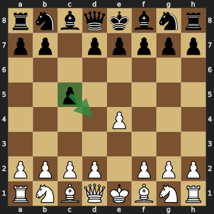
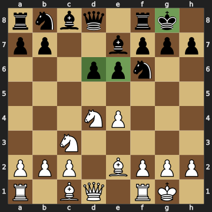
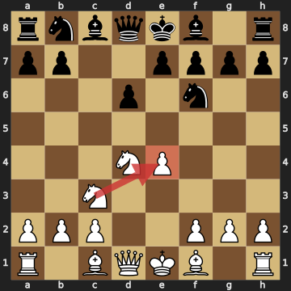
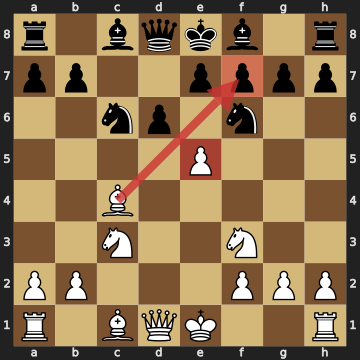

シシリアン・ディフェンス（1.e4 c5）は、白の1.e4に対して黒が選ぶ応手の中で、最もよく指されるものの1つです。黒は最初から左右の形が違う局面を作るので、勝ちを狙いやすい反面、白の鋭い攻めや落とし穴も多いオープニングです。この記事では、初級〜中級の方が黒でシシリアンを指すときに、大きな失敗をせずに戦うためのコツを、実際の盤面を使って解説します。

黒は1...c5で白が使いたいd4のマスをcのポーンから利かせます。白は中央にeとdのポーンを並べたいのですが、黒はそれを横からじゃましているわけです。
白がd4と突いてくると、黒はふつうcxd4とポーンを交換します。黒はcのポーンを白のdのポーンと交換するので、中央のポーンは黒のほうが1つ多く残ります。さらに黒は、あいたc列をルークやクイーンで使って、クイーンサイドから反撃できます。
その代わり、白は駒の展開が早くなり、キングサイドへ攻めてくることがよくあります。黒はこの攻めを受け止めながら反撃するので、局面が激しくなりやすいのです。
約束① キングサイドの駒を早く出して、早めにキャスリングする
シシリアンでは、黒がcxd4とポーンを交換するので、早い段階で中央が開きます。中央が開いた局面で黒のキングがe8に残っていると、白のビショップやルーク、ナイトに狙われやすくなります。
黒はナイトをf6に、ビショップをe7（またはg7）に出したら、早めにキャスリングしましょう。クイーンサイドのポーンを進める作戦は、黒がキングを安全にしてからでも間に合います。
約束② 欲張ってポーンを取りに行かない
シシリアンでは、白がポーンを差し出して、そのあいだに駒を早く展開する作戦がよく出てきます。代表的なのがスミス・モラ・ギャンビットで、白は1.e4 c5 2.d4 cxd4 3.c3とcのポーンも差し出します。
ポーンを取ること自体が悪いわけではありません。しかし、黒が取ったポーンを守ることに手を使いすぎると、そのあいだに白の駒がどんどん攻めてきます。自信がないうちは、黒は無理にポーンを取りに行かず、駒の展開とキングの安全を先に考えましょう。
黒のクイーンが早く出ていって、b2のポーンなどを取りに行く手にも注意が必要です。黒のクイーンが盤の端でポーンを取っているあいだに、白は駒を展開して攻めの準備を進められるからです。
約束③ d5のマスとf7のマスに気をつける
白のナイトは、c3からd5のマスに飛び込んで、黒の駒やキングの近くをにらむことがよくあります。黒がeのポーンをe6に置いておくと、e6のポーンがd5を利かせるので、白のナイトはd5に入りにくくなります。
白のビショップがc4に出てきたときは、f7のマスに注意しましょう。キャスリングする前の黒のf7は、キングしか守っていないので、白のビショップとナイトやクイーンに狙われやすいマスです。黒はe6と突くと、c4のビショップからf7への道をふさげます。f7の弱点については、初心者必見!f7地点の崩し方と対策でも詳しく解説しています。
黒がeのポーンをe5まで進める形もあります。スベシニコフ・バリエーションや、ナイドルフ・バリエーションの一部の形がそうです。黒はd5のマスが弱くなる代わりに中央を強く押さえるので、d5をどう守るかをよく知っている人向けの作戦です。

初級〜中級の方におすすめなのが、黒がdのポーンをd6に、eのポーンをe6に置く形です。この形はシェベニンゲン・バリエーションと呼ばれ、黒のd6のポーンはe5を、e6のポーンはd5を利かせて、白の駒が中央に入りこむのを防ぎます。
黒はビショップをe7に出せば、すぐにキャスリングできます。図の局面では、黒はすでにキャスリングを終えていて、約束①も守れています。
このあと黒は、a6・Qc7・b5と、クイーンサイドのポーンと駒を使って反撃するのが代表的な作戦です。準備ができたら、黒はd5と突いて中央をこじ開ける手もあります。
5...e6のあと、白が6.g4と突いてくるケレス・アタックという攻め方もあります。白はg5と突いてf6のナイトを追い払おうとするので、黒は6...h6と突いて、白のポーンがg5に来たらhのポーンで取れるようにしておくのがよく指される受け方です。
黒がgのポーンをg6に突いてビショップをg7に出すドラゴン・バリエーションは、白にユーゴスラフ・アタックで激しく攻められやすい形です。黒は慣れるまでは、ここで紹介した「小さな中央」の形から始めるほうが安全です。
白は2.Nf3と3.d4で中央を開くオープン・シシリアンのほかに、2手目や3手目で別の作戦をとることがあります。ここでは、よく出てくる白の作戦と、黒の安全な受け方を紹介します。
失敗① 守られているe4のポーンを取ってしまう

図の局面で、黒が5...Nxe4とポーンを取るのは失敗です。白のe4のポーンはc3のナイトに守られているので、白は6.Nxe4とナイトで取り返します。黒はポーン1つと引き換えに、ナイトを失ってしまいます。
白のNc3は、ナイトを展開するだけでなく、e4のポーンを守る手でもあります。黒は相手の駒を取る前に、その駒がほかの駒に守られていないかを確かめましょう。
失敗② スミス・モラで、f7の弱さを忘れてナイトを出す

黒は6...Nf6とナイトを出しました。自然な展開に見えますが、白は7.e5とポーンを突いて、f6のナイトとd6のポーンを同時に攻めてきます。
ここで黒が7...Nxe5と取ると、白は8.Nxe5 dxe5 9.Bxf7+とビショップを捨てます。黒はキングで9...Kxf7と取るしかなく、白は10.Qxd8とd8のクイーンを取ります。黒はビショップ1つと引き換えに、クイーンを失ってしまいます。
黒が7...dxe5と取っても、白は8.Qxd8+ Nxd8 9.Nb5と攻めてきます。白は次にNc7+と飛びこんで、e8のキングとa8のルークを同時に攻める手を狙っているので、黒は守るのに苦労します。
実は7.e5のあと、黒は7...Ng4とナイトを逃がせば、まだ戦える局面になります。ただし複雑な局面なので、黒は慣れないうちは6...e6でこの形を避けておくのがおすすめです。
失敗③ キングを中央に残したまま、クイーンサイドのポーンばかり進める
黒がa6・b5とクイーンサイドのポーンを進めるのは、シシリアンでよく出てくる作戦です。しかし、黒がキャスリングをしないまま続けると、中央が開いたときにキングが逃げ遅れてしまいます。
白は、Nd5やBxe6のように駒を捨てる手でe8に残った黒のキングを攻めてくることがあります。黒はポーンを進める前に、キングが安全かどうかを確かめましょう。
シシリアンを安全に指すには、①キングサイドの駒を早く出して早めにキャスリングする、②欲張ってポーンを取りに行かない、③d5とf7のマスに気をつける、の3つの約束が大切です。形に迷ったら、黒のポーンをd6とe6に置く「小さな中央」から始めてみましょう。白が2手目や3手目で別の作戦をとってきたときも、黒は落ち着いて駒を展開し、キングを安全にすることを優先すれば、大きな失敗は防げます。
The Sicilian Defense (1.e4 c5) is one of Black's most popular replies to 1.e4. Black creates an unbalanced position from the very first move, which gives good winning chances — but it also means sharp attacks and plenty of traps. This article explains how beginner and intermediate players can play the Sicilian as Black without falling into big mistakes, using positions from real games.
With 1...c5, Black controls the d4 square — the square White wants to use — with the c-pawn. White would like to line up the e- and d-pawns in the center, and Black is interfering from the side.
When White pushes d4, Black usually trades with cxd4. Because Black gives up the c-pawn for White's d-pawn, Black keeps one more central pawn than White. Black can also use the half-open c-file with a rook or the queen to counterattack on the queenside.
In return, White gets faster development and often attacks on the kingside. Black has to absorb that attack while counterattacking, so the positions tend to get sharp.
Rule 1: Develop your kingside pieces quickly and castle early
In the Sicilian, Black trades with cxd4, so the center opens early. If Black's king is still on e8 when the center opens, White's bishops, rooks and knights can easily target it.
Once Black has developed the knight to f6 and the bishop to e7 (or g7), Black should castle soon. Black's queenside pawn play can wait until the king is safe.
Rule 2: Don't get greedy with pawns
In the Sicilian, White often offers a pawn to gain time for fast development. The best-known example is the Smith-Morra Gambit, where White gives up the c-pawn as well with 1.e4 c5 2.d4 cxd4 3.c3.
Taking a pawn is not bad in itself. But if Black spends too many moves defending the extra pawn, White's pieces will pour into the attack. Until Black feels confident, Black should not grab pawns at all costs, and should think about development and king safety first.
Black should also be careful about sending the queen out early to grab pawns such as the one on b2. While Black's queen is collecting a pawn on the edge of the board, White can develop and prepare an attack.
Rule 3: Watch the d5 and f7 squares
White's knight often jumps from c3 to d5, where it eyes Black's pieces and the area around the king. If Black keeps the e-pawn on e6, that pawn controls d5, making it harder for White's knight to land there.
When White's bishop comes to c4, watch the f7 square. Before Black castles, f7 is defended only by the king, so it is an easy target for White's bishop together with a knight or the queen. By pushing ...e6, Black blocks the c4-bishop's path to f7. For more on this weak point, see Targeting f7: A Beginner's Guide to a Classic Weak Point.
Black can also push the e-pawn all the way to e5. The Sveshnikov Variation and some lines of the Najdorf Variation use this idea. Black accepts a weak d5 square in exchange for strong control of the center, so it suits players who know how to hold d5.
For beginner and intermediate players, we recommend a setup with Black's d-pawn on d6 and e-pawn on e6. This is called the Scheveningen Variation: Black's d6-pawn controls e5, the e6-pawn controls d5, and together they keep White's pieces out of the center.
Once Black develops the bishop to e7, Black can castle right away. In the diagram, Black has already castled, so Rule 1 is taken care of too.
From here, Black's typical plan is to counterattack on the queenside with ...a6, ...Qc7 and ...b5. When Black is ready, Black can also push ...d5 to break open the center.
After 5...e6, White can also play 6.g4, known as the Keres Attack. White wants to push g5 to drive away the f6-knight, so a common reply is 6...h6, letting Black capture with the h-pawn if White's pawn arrives on g5.
In the Dragon Variation, where Black pushes the g-pawn to g6 and puts the bishop on g7, White can launch a fierce attack with the Yugoslav Attack. Until Black is comfortable, starting with the "small center" setup shown here is the safer choice.
Besides the Open Sicilian, where White opens the center with 2.Nf3 and 3.d4, White sometimes chooses a different plan on move 2 or 3. Here are the systems you will meet most often, along with safe answers for Black.
Mistake 1: Taking the e4-pawn when it is defended
In the diagram, taking the pawn with 5...Nxe4 is a mistake. White's e4-pawn is defended by the knight on c3, so White recaptures with 6.Nxe4. Black loses a knight for a single pawn.
White's Nc3 not only develops a knight but also defends the e4-pawn. Before Black captures anything, Black should check whether that piece is defended by another one.
Mistake 2: Forgetting about f7 in the Smith-Morra
Black has developed with 6...Nf6. It looks natural, but White pushes 7.e5, attacking the f6-knight and the d6-pawn at the same time.
If Black captures with 7...Nxe5, White plays 8.Nxe5 dxe5 9.Bxf7+, sacrificing the bishop. Black has to take with the king, 9...Kxf7, and White wins Black's queen with 10.Qxd8. Black has lost the queen for just a bishop.
Even if Black captures with 7...dxe5, White continues 8.Qxd8+ Nxd8 9.Nb5. White is threatening to jump in with Nc7+, attacking the king on e8 and the rook on a8 at once, so Black has a hard time defending.
In fact, after 7.e5 Black can still fight by retreating the knight with 7...Ng4. The position is complicated, though, so until Black is comfortable, avoiding it with 6...e6 is the better choice.
Mistake 3: Pushing queenside pawns while the king stays in the center
Pushing ...a6 and ...b5 on the queenside is a common plan for Black in the Sicilian. But if Black keeps going without castling, the king will be caught in the center when it opens up.
White may attack Black's king on e8 with piece sacrifices such as Nd5 or Bxe6. Before pushing pawns, Black should make sure the king is safe.
To play the Sicilian safely, remember three rules: (1) develop your kingside pieces quickly and castle early, (2) don't get greedy with pawns, and (3) watch the d5 and f7 squares. If you're unsure which setup to choose, start with the "small center," with Black's pawns on d6 and e6. Even when White chooses a different system on move 2 or 3, Black can avoid big mistakes by calmly developing pieces and putting king safety first.